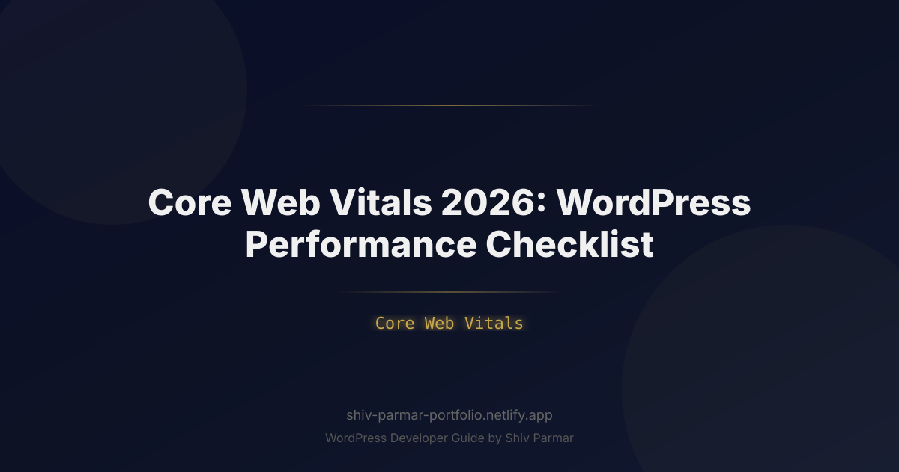

Core Web Vitals 2026: WordPress Performance | Shiv Parmar
Table of Contents
In 2026, web users no longer tolerate even a millisecond of unnecessary latency. As digital experiences grow richer with real-time dynamic content, complex interaction patterns, and AI-integrated front-end interfaces, website speed and responsiveness have transitioned from competitive advantages to baseline operational standards. For WordPress site owners, managing performance is no longer limited to running a casual audit—it directly dictates search engine visibility, user conversion rates, and long-term audience retention in an increasingly automated web ecosystem.
Google's Core Web Vitals have matured into the central benchmark for evaluating page-level user experience. With Interaction to Next Paint (INP) fully established alongside Largest Contentful Paint (LCP) and Cumulative Layout Shift (CLS), modern technical optimization requires a precise, architectural approach. WordPress powers over 40% of the active web, but its modular nature, database reliance, and plugin-driven architecture mean it is particularly vulnerable to performance bottlenecks if left unmanaged.
This comprehensive performance checklist provides an actionable guide to auditing, optimizing, and maintaining peak Core Web Vitals scores on WordPress in 2026. Whether you run a high-traffic e-commerce store, a dynamic editorial site, or a corporate portal, the technical strategies outlined below will help you eliminate performance lag, satisfy search engine requirements, and deliver immediate visual responses to your visitors.
What are Core Web Vitals in 2026?
Core Web Vitals are a standardized set of performance metrics established by Google to evaluate the real-world user experience of web pages. Rather than measuring purely technical server response times, these metrics reflect how quickly content renders, how rapidly a page responds to user input, and how visually stable the interface remains during execution. In 2026, Google evaluates sites based on field data collected via the Chrome User Experience Report (CrUX), placing primary weight on three core performance pillars.
To pass the Core Web Vitals assessment, a page must achieve a passing score (the 75th percentile of page visits) across all three metrics simultaneously. Below is an overview of the core triad:
- Largest Contentful Paint (LCP): Measures perceived loading speed. LCP marks the precise point in the page loading timeline when the main content element—such as a hero image, video banner, or large text block—has fully rendered in the viewport.
- Interaction to Next Paint (INP): Measures overall page responsiveness to user input. INP assesses the execution delay of all qualifying user interactions (such as taps, clicks, and keypresses) throughout a visitor's entire session, recording the longest latency observed.
- Cumulative Layout Shift (CLS): Measures visual stability. CLS quantifies unexpected layout shifts that occur when elements move position dynamically during initial page render or runtime execution without direct user triggers.
| Metric | Good (Pass) | Needs Improvement | Poor | Primary Optimization Target |
|---|---|---|---|---|
| LCP (Largest Contentful Paint) | ≤ 2.5 seconds | 2.5s – 4.0s | > 4.0 seconds | Server TTFB, media formats, render-blocking assets |
| INP (Interaction to Next Paint) | ≤ 200 milliseconds | 200ms – 500ms | > 500 milliseconds | Main-thread blocking, heavy JavaScript, long tasks |
| CLS (Cumulative Layout Shift) | ≤ 0.10 | 0.10 – 0.25 | > 0.25 | Explicit dimensions, web fonts, dynamically inserted DOM |
Why Core Web Vitals Matter in 2026
The technical landscape of 2026 treats Core Web Vitals as critical infrastructure rather than optional SEO tasks. Search engines and modern discovery algorithms evaluate performance signals directly within their ranking pipelines. A site with poor performance metrics risks lowered search visibility, reduced crawl efficiency, and lower positioning in automated answer engines and AI-driven search overviews that prioritize fast, accessible sources.
Beyond organic search ranking factors, user behavior metrics demonstrate a sharp decline in user conversion and engagement as latency increases. Modern users expect immediate feedback when clicking a button or filling out a form. High INP latency creates noticeable interface lag, leading to accidental double submissions, high checkout drop-offs, and increased bounce rates on mobile devices.
Furthermore, the modern web stack relies heavily on dynamic front-end frameworks, complex third-party tracking scripts, and rich media assets. In WordPress ecosystems, where themes and plugins constantly append third-party code, proactive Core Web Vitals optimization protects your technical infrastructure from cumulative performance degradation over time.
Step-by-Step Core Web Vitals 2026 WordPress Checklist
1. Optimize Infrastructure and Server Performance
Every Core Web Vitals metric relies heavily on a fast initial server response. If your Time to First Byte (TTFB) is slow, your LCP, INP, and CLS scores will suffer regardless of front-end optimizations. In 2026, hosting environments must utilize modern execution engines, edge network delivery, and robust object caching layers.
- Upgrade to PHP 8.3+: Ensure your hosting platform runs PHP 8.3 or higher. PHP 8.3 delivers improved memory management and execution speeds for core WordPress queries compared to legacy environments.
- Implement Persistent Object Caching: Deploy Redis or Memcached to cache database query results in memory, preventing repetitive database calls on dynamic page renders.
- Leverage HTTP/3 and QUIC Protocols: HTTP/3 eliminates head-of-line blocking and establishes server connections dramatically faster, which is critical for multiplexing CSS, JS, and image requests.
- Deploy Full-Page Edge Caching: Use Cloudflare Enterprise, Fastly, or server-level caching (like NGINX FastCGI or LiteSpeed) to deliver static HTML directly from edge nodes closest to the user.
You can optimize database connection persistent settings and control object caching timeouts directly within your wp-config.php file:
// Optimize database performance and object cache settings
define( 'WP_CACHE', true );
define( 'ENABLE_CACHE', true );
define( 'EMPTY_TRASH_DAYS', 7 );
define( 'AUTOSAVE_INTERVAL', 300 ); // Reduce database auto-saves to every 5 minutes
define( 'WP_POST_REVISIONS', 5 ); // Limit revisions to prevent table bloat
2. Mastering LCP (Largest Contentful Paint) in WordPress
LCP is most frequently degraded by oversized hero images, unoptimized background graphics, slow custom web fonts, or render-blocking external stylesheets. To optimize LCP, you must ensure the primary image or content block renders within the initial viewport as quickly as possible.
- Adopt Next-Gen Image Formats (AVIF/WebP): Convert all uploaded media automatically to AVIF or optimized WebP formats. AVIF provides up to 30% greater compression efficiency over WebP without compromising visual quality.
- Preload the LCP Image: Instruct the browser to download the hero element immediately, bypassing standard document parsing queues.
- Disable Lazy Loading on Viewport Content: Native WordPress lazy loading (
loading="lazy") must be disabled for the primary LCP image to avoid delaying its initial request. - Use
fetchpriority="high": Mark the critical media element to explicitly signal its priority to the browser network engine.
The code snippet below hooks into WordPress to automatically add preloading headers and high fetch priority attributes to specified hero images:
/**
* Preload LCP Hero Image and Apply High Fetch Priority
*/
function optimize_lcp_element() {
if ( is_front_page() || is_single() ) {
$hero_image_url = get_the_post_thumbnail_url( get_the_ID(), 'full' );
if ( $hero_image_url ) {
echo '<link rel="preload" fetchpriority="high" as="image" href="' . esc_url( $hero_image_url ) . '" type="image/avif">' . "\n";
}
}
}
add_action( 'wp_head', 'optimize_lcp_element', 1 );
/**
* Remove lazy loading from the first post image (LCP candidate)
*/
function remove_lazy_loading_lcp( $attr, $attachment, $size ) {
if ( is_main_query() && in_the_loop() ) {
static $first_image = true;
if ( $first_image ) {
unset( $attr['loading'] );
$attr['fetchpriority'] = 'high';
$first_image = false;
}
}
return $attr;
}
add_filter( 'wp_get_attachment_image_attributes', 'remove_lazy_loading_lcp', 10, 3 );
3. Conquering INP (Interaction to Next Paint)
INP replaced First Input Delay (FID) as a primary Core Web Vital. Unlike FID, which only measured the initial delay when clicking a button for the first time, INP measures every interaction over the lifetime of a page session and logs the longest latency period. In WordPress, bad INP is usually caused by excessive JavaScript execution, long tasks on the main thread, unoptimized event listeners, and heavy page-builder scripts.
- Break Up Long Tasks (> 50ms): Split complex JavaScript routines into smaller execution blocks using
requestIdleCallback()orsetTimeout()to yield control back to the main thread. - Defer Non-Critical JavaScript: Move secondary scripts, tracking codes, and widget scripts off the critical execution path by adding
deferorasyncattributes. - Optimize Plugin Event Handlers: Audit third-party form builders, dynamic filters, and mobile menu scripts to ensure click handlers do not run expensive calculations synchronously during user input.
- Remove Heavy Front-End Page Builders: Replace unoptimized front-end page builders with native Block Themes (Full Site Editing) or lightweight, modern rendering architectures.
You can use the following snippet in your active theme's functions.php file to automatically defer non-essential JavaScript assets across your site:
/**
* Defer non-critical JavaScript files in WordPress
*/
function defer_non_critical_scripts( $tag, $handle, $src ) {
// Exclude core administrative scripts or key framework scripts if necessary
$excluded_handles = array( 'jquery-core', 'wp-polyfill' );
if ( is_admin() || in_array( $handle, $excluded_handles, true ) ) {
return $tag;
}
// Add defer attribute to script tags
if ( false === strpos( $tag, 'defer' ) && false === strpos( $tag, 'async' ) ) {
return str_replace( ' src=', ' defer="defer" src=', $tag );
}
return $tag;
}
add_filter( 'script_loader_tag', 'defer_non_critical_scripts', 10, 3 );
4. Eliminating CLS (Cumulative Layout Shift)
CLS occurs when elements on a web page move dynamically while the page is rendering, causing unexpected positioning shifts. In WordPress, common culprits include images without explicit width and height attributes, web font swaps causing text size jumps (FOUT/FOIT), dynamically injected advert slots, and un-dimensioned embedded media.
- Set Explicit Image and Video Dimensions: Always specify precise
widthandheightattributes on images, logos, and video wrappers to allow browsers to allocate exact layout space immediately. - Reserve Space for Dynamic Elements: Allocate explicit minimum heights using CSS for ad slots, consent banners, and dynamically loaded content modules.
- Optimize Custom Web Font Loading: Use CSS
font-display: swap;alongside font metric overrides (size-adjust,ascent-override,descent-override) to align fallback system fonts with custom web fonts. - Avoid Inserting Top-Level DOM Elements: Never dynamically inject notification bars or banner scripts above pre-existing page content after visual render has started.
Use the following modern CSS pattern in your theme to enforce strict aspect ratios and smooth web font transitions to suppress layout shifts:
/* Reserve aspect ratio space for media wrappers to eliminate CLS */
.media-container {
width: 100%;
aspect-ratio: 16 / 9;
background-color: #f0f0f0; /* Placeholder color during download */
overflow: hidden;
}
/* Set dimensions explicitly for images within container */
.media-container img {
width: 100%;
height: 100%;
object-fit: cover;
}
/* Prevent font metric shifts using font-display and fallback adjustments */
@font-face {
font-family: 'CustomWebFont';
src: url('/wp-content/themes/mytheme/assets/fonts/custom-font.woff2') format('woff2');
font-display: swap;
ascent-override: 90%;
descent-override: 20%;
line-gap-override: 0%;
}
5. Implementing Modern Speculation Rules & Resource Hints
By 2026, standard resource prefetching has evolved. Chrome's Speculation Rules API allows WordPress developers to specify rules for pre-rendering whole pages in the background based on user intent (e.g., when hovering over a link), leading to near-instantaneous page navigations that dramatically drop LCP and INP scores.
- Implement Speculation Rules API: Inject JSON-configured speculation rules to pre-render likely navigation paths safely.
- Preconnect to Critical External Origins: Open early socket connections to necessary third-party domains (such as font hosting or payment processing platforms).
The code below inserts modern Speculation Rules into your site's HTML header via WordPress hooks:
/**
* Inject Chrome Speculation Rules for Near-Instant Navigation
*/
function add_speculation_rules() {
if ( is_admin() ) {
return;
}
?>
<script type="speculationrules">
{
"prerender": [
{
"source": "list",
"urls": ["/checkout/", "/shop/"]
},
{
"source": "document",
"where": {
"and": [
{ "href_matches": "/*" },
{ "not": { "href_matches": "/wp-admin/*" } },
{ "not": { "href_matches": "/wp-login.php*" } }
]
},
"eagerness": "moderate"
}
]
}
</script>
<?php
}
add_action( 'wp_head', 'add_speculation_rules', 2 );
6. WordPress Plugin and Database Hygiene
The flexibility of WordPress is its greatest strength, but unmanaged plugin usage leads directly to performance degradation. Unused CSS/JS assets, excessive database queries, and bloat in the wp_options table slow down server processing and client-side execution alike.
- Audit Autoloaded Options: Ensure the total size of your autoloaded options in the
wp_optionsdatabase table remains under 800 KB. Excess autoloaded options are fetched on every single page request, degrading server response time. - Dequeue Unused Block Styles: If you are not utilizing core Gutenberg default block styles across your custom layout, dequeue them to prevent unnecessary CSS files from loading.
- Disable WooCommerce Assets Non-E-Commerce Pages: Prevent shopping cart and payment gateway assets from executing on standard blog posts or static landing pages.
Add this targeted cleanup snippet to selectively unhook unnecessary scripts and styles from your front-end render pipeline:
/**
* Dequeue Unused Core Block Styles and Script Assets
*/
function conditional_asset_cleanup() {
// Remove Gutenberg block library styling on non-essential post types
if ( ! is_single() && ! is_page() ) {
wp_dequeue_style( 'wp-block-library' );
wp_dequeue_style( 'wp-block-library-theme' );
wp_dequeue_style( 'wc-blocks-style' ); // WooCommerce block styles
}
// Disable devicepx script injected by Jetpack if present
wp_dequeue_script( 'devicepx' );
}
add_action( 'wp_enqueue_scripts', 'conditional_asset_cleanup', 100 );
Best Practices for Maintaining Peak Performance
Optimizing for Core Web Vitals is an ongoing governance process, not a one-time setup task. As content creators publish new articles, administrators install plugins, and developers deploy updates, continuous monitoring is critical to prevent performance regressions.
- Rely on Real User Monitoring (RUM): Synthetic performance tests (like desktop PageSpeed Insights runs) do not trigger Google ranking penalties. Focus primarily on field data reported through the Chrome User Experience Report (CrUX) and integrated real-user analytics tools.
- Establish a Staging Performance Gate: Audit code changes, new theme builds, and major plugin additions in a staging environment using tools like WebPageTest or Lighthouse CI before pushing changes to production.
- Enforce Strict Plugin Governance: Implement a clear review policy for new plugin requests. Evaluate candidate plugins for script payload size, main-thread blocking time, and query counts before approval.
- Utilize Native Block Themes: Modern WordPress block themes built on Full Site Editing (FSE) render significantly cleaner code structures with far less overhead than legacy page-builder themes.
- Set Up Edge-Side Image Optimization: Automate image conversion, resizing, and responsive srcset generation directly on your CDN edge network to maintain optimal performance automatically for all editor uploads.
Common Mistakes to Avoid
Even experienced WordPress site managers can make structural mistakes that unintentionally drop Core Web Vitals scores. Avoiding these common traps is crucial for maintaining solid baseline performance.
- Lazy Loading the LCP Hero Image: Applying
loading="lazy"to your top visual banner or featured image delays its request until the browser main thread executes script layout calculations. This severely degrades your LCP score. Never lazy load images located above the initial viewport fold. - Stacking Multiple Optimization Plugins: Installing multiple optimization, caching, and minification plugins simultaneously creates script execution conflicts, duplicate file processing, and erratic rendering output. Use a single unified caching/optimization layer or server-level solution.
- Optimizing Exclusively for Desktop: Google evaluates Core Web Vitals using a mobile-first indexing strategy. Desktop scores are often significantly higher due to processing power; always focus your primary optimization efforts on low-to-mid tier mobile devices operating over standard cellular networks.
- Relying Solely on Synthetic Lab Scores: A 100/100 score in Lighthouse does not guarantee a pass in Google's ranking systems if your real-world visitors experience slow interaction latency (INP) or real-time layout shifts (CLS) on varied device hardware.
- Ignoring Autoloaded Database Data: Optimizing front-end CSS and JS assets while neglecting backend database performance leads to slow dynamic requests, elevated TTFB, and server timeout issues during traffic spikes.
Conclusion
As we navigate the evolving digital landscape of 2026, optimizing your site's Core Web Vitals is essential for maintaining search visibility and delivering an exceptional user experience. By systematically following this performance checklist—from leveraging modern caching techniques to trimming unnecessary script overhead—you can dramatically improve your overall WordPress performance and stay ahead of algorithmic updates.
Keep in mind that speed optimization is an continuous process rather than a one-time fix. Regularly auditing your site to refine your LCP, INP, and CLS scores will prevent speed degradation as you publish new content, install updates, or add features. Balancing your Largest Contentful Paint, Interaction to Next Paint, and Cumulative Layout Shift ensures a fast, highly responsive, and visually stable browsing experience for every visitor.
If you need expert assistance auditing your site or implementing advanced speed optimizations, help is just a message away. Shiv Parmar is available for WordPress development work worldwide, helping businesses streamline their codebase, remediate Core Web Vitals bottlenecks, and build lightning-fast web experiences. Get in touch today to elevate your website's performance to the next level.